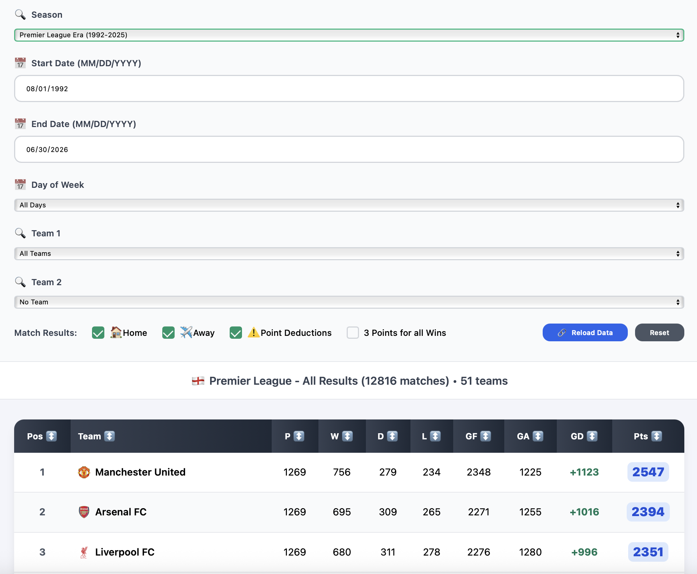
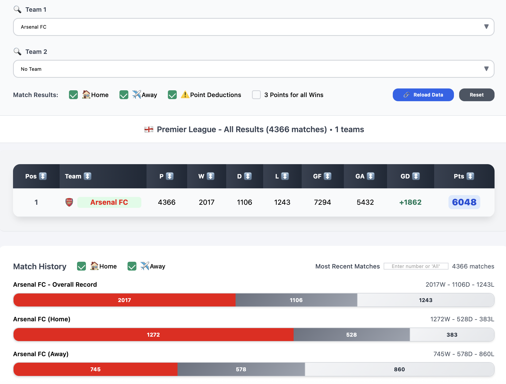

Questions & Answers
Find answers to common questions about the website.
What exactly is this website?
In short, it's a collection of different team statistics all compiled in one place.
It's a way to find niche and mainstream team information all on one easy to use website.
How reliable is this data?
All data has been verified by multiple sources to ensure its accuracy.
Of course, with such a large data set spanning across so many years, it's hard to double check every single statistic. So if you discover something you believe to be wrong, contact us through the Contact & Support tab. We'll investigate your claim as quick as we can.
Do you plan to add player statistics?
There are no plans to include player statistics in the short or long term futures. Sorry to disappoint, but there are plenty of other sites which provide these functionalities.
Which leagues are covered?
We currently cover the top 5 European leagues: the English Premier Liga, Spanish La Liga, German Bundesliga, Italian Serie A, and the French Ligue 1. All statistics on this website are only from these 5 leagues, in this point of time.
Are there plans to add other leagues and domestic competitons?
Not at this time. The current focus is on continental and international competitions, and other sports.
How often is data updated?
Currently every Thursday. In the near future, it will be done more often.
How many years of data is covered on this website?
Every single professional season from the major five leagues in their current setup, with their current name and format has been included. Examples of exclusions include Oberliga seasons in Germany, Divisione Nazionale seasons in Italy, and Amateur Football Champions in France.
How does the League Tables tab work?
The League Tables tab allows you to grab historic league tables or access head-to-head data with various filters:
- Date Range - Filter matches by specific date ranges, or look at past league tables.
- Day of Week - See performance on specific days (e.g., weekend vs weekday games).
- Home/Away - Toggle between home and away performance.
- Point Deductions - Include or exclude point penalties.
- Head-To-Head Stats - Get accurate head-to-head stats with a list games played.
Past League Seasons
Looking at past season standings is now easy. All you have to do is pick a league, and choose a season with the dropdown menu. You'll get the accurate standings from that season. If you want to filter by just home results, uncheck the away box in Match Results.
Custom Date Ranges
If you want to look at the standings between a custom date range, enter a start date and end date in the appropriate box. The league standings for that range will then be fetched. You can now easily find the league standings since when a particular coach was appointed. For example, Pep Guardiola on July 1st, 2016.
To view the all-time standings for the Premier League, you can go to season and choose Premier League Era, and the dates will adjust adjust automatically.
Head-to-Head Stats
Get the detailed all time record between 2 teams. All you have to do is choose a Team 1 and Team 2. You'll get home, away, and overall splits. And the league table in head-to-head matchups.
You'll also get a list of matches between the teams, which can be sorted how you like.
Complex Filters
You can combine multiple filters to get data which you can't anywhere else. Let's take this example. We only want the results of the last 20 games where Arsenal is the away team and Chelsea is the home team.
We choose Arsenal as Team 1, Chelsea as Team 2. We unselect the home checkbox, and in the Head-to-Head Record bar, we select 20 in the drop down menu, giving only the outcome for the 20 most recent matchups. As you can see, in all of the matches, Chelsea is home and Arsenal is away, and there are exactly 20 results filtered out.
How does the Team Seasons tab work?
Team Seasons provides a list of team performances across multiple seasons. You can:
- View a team's performance across all available seasons.
- Filter out a team's seasons by league positions.
- Find out how many times a team finished in a position, and when was the last time.
- See which teams finished in specific positions across seasons.
- Find out which teams have finished in a position the most times.
Getting a Team's Historical Seasons
Getting a club's historical seasons is as easy as selecting a league, and choosing a team from the dropdown menu.
You can see all the historic places of the team now. You can either sort the table by the various columns, or use "Filter by Position:", to only select the seasons a team finished an exact position.
Getting a League's Historical Places
To get an entire league's historical places, all you have to do is choose a league, and pick a position. If you pick 2nd, you'll get a list of all the second place teams. Count tells you how many times that team has done it.
How does the "The Last Time When..." tab work?
"The Last Time When..." tab helps you find the last time a team won, drew or lost against all teams, or a specific opponent.
One Team Mode
Pick a league and choose 1 team from a dropdown menu. Optionally, you can choose to filter between Home and Away matches. Let's take Home for this scenario.
Now, you get a list of three matches. Your team's selected last home win, home draw, and home loss.
Two Team Mode
Pick a league and choose both a team 1 and team 2 from the dropdown menu. Optionally, you can choose to filter between Home and Away matches. Let's take Away for this scenario.
Now, you get a list of three matches. Your team 1's selected last away win, away draw, and away loss specifically against team 2.
How does the Team Streaks tab work?
Team Streaks help you filter streaks between a club and other clubs You can:
- Filter between Home, Away, or Both types of Games.
- Filter between one club against all opponents or against a specific opponent.
- Filter with four types of streaks: Winning, Unbeaten, Winless, or Losing.
Active Streaks
This feature allows you to find out current streaks between one or more clubs. Let's take this example. We want to find out how many times in a row Manchester United has failed to win at Liverpool.
We select Active Streak for Status, Winless Streak for Streak Type, Manchester United for Team 1, and Liverpool for Team 2. This gives you the list of matches for the streak, and how many days ago the streak started. It also gives you the last opposite result.
Historic Streaks
This feature allows you to find the longest streaks all time for either 1 team, or between two. For this scenario, let's find Bayern Munich's longest unbeaten home streaks.
We select Bundesliga as our league, then choose Historic Streaks, Unbeaten Streak, and Bayern Munich as Team 1. What we're listed is the start date, end date, number of the matches and days the streak lasted for. Every streak this team has had is listed, and you can sort these streaks how you like.